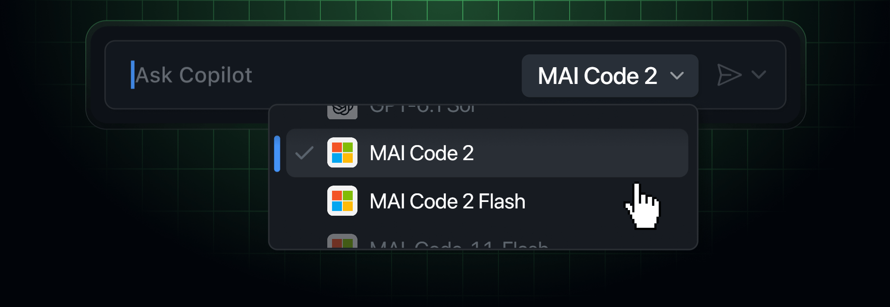
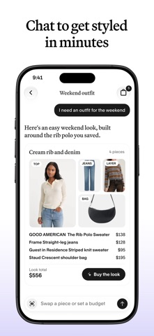
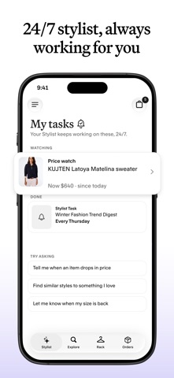

AI NEWS ISSUE 51
GPT-6.2, 종합 점수는 올랐는데 코딩 성적은?
Astra와 Sol의 평가 결과 · 한국에서도 무료로 열리는 Gemini Tasks · Microsoft MAI Code 2와 GitHub Copilot Evals · Daydream의 쇼핑 대행
AT A GLANCE
30초 요약
- OpenAI GPT-6.2 Astra는 OpenAI가 발표한 전문 업무 평가에서 더 낮은 비용으로 점수가 올랐습니다. 독립 기관의 코딩 에이전트 평가에서는 이전 Astra와 동점이었습니다.
- Google 한국을 포함한 6개국에서 Gemini Tasks의 무료 제공을 시작했습니다. 매장에 전화를 걸거나 Google Pay로 결제하는 기능은 미국부터 열립니다.
- Microsoft와 GitHub Copilot에 MAI 코딩 모델 두 종이 추가됐습니다. 새 평가 도구 Copilot Evals로는 스킬이나 도구를 바꾼 뒤 같은 과제를 다시 채점할 수 있습니다.
- Daydream 원하는 옷을 문자로 설명하면 코디를 제안하고 가격 변동도 지켜봅니다. 참여 판매처에서는 고객이 승인한 주문을 대신 결제할 수 있습니다.
자료 확인 2026년 11월 18일 한국시간 기준. 원문에 표시된 발표일은 모두 11월 17일입니다.
01 / OPENAI
전문 업무를 끝내는 비용은 줄었습니다. 코딩도 그랬을까요?
코드에서 할인 금액을 계산하는 곳을 모두 찾아 달라고 했는데, 모델이 환불 경로 하나를 빠뜨렸다고 해보죠. 답은 빨리 돌아왔지만 개발자는 저장소를 다시 뒤져야 합니다. OpenAI가 내놓은 GPT-6.2 Astra와 Sol의 성적표는 어떤 일을 맡기느냐에 따라 다르게 읽힙니다.
OpenAI는 복잡한 전문 업무와 코딩에는 Astra를, 일상적인 개발과 여러 단계의 반복 작업에는 Sol을 제시합니다. 두 모델은 ChatGPT Work와 Codex의 대상 유료 요금제, OpenAI API에서 제공됩니다. 여러 단계의 전문 업무를 수행하는 Agents’ Last Exam에서 새 Astra는 이전 Astra보다 5.2점 높았고 과제당 모델 비용은 3분의 1 미만이었다고 OpenAI는 밝혔습니다. OpenAI 한국어 발표 ↗
모델별 최고 점수와 그때의 과제당 비용
Agents’ Last Exam v1.1
평가 점수 0~100%
-
GPT-6.2 Astra Xhigh78.3%
-
GPT-6 Astra Max73.1%
-
GPT-6.2 Sol Max73.0%
-
GPT-6.1 Sol Max72.5%
과제당 모델 비용 0~10달러
-
GPT-6.2 Astra Xhigh$2.89
-
GPT-6 Astra Max$8.99
-
GPT-6.2 Sol Max$1.32
-
GPT-6.1 Sol Max$2.02
| 모델 | 일반 입력 | 캐시 입력 | 출력 |
|---|---|---|---|
| GPT-6.2 Astra | $8 | $0.40 | $40 |
| GPT-6.2 Sol | $2 | $0.10 | $10 |
Astra의 일반 입력·출력 단가는 GPT-6 Astra보다 20%, 캐시 입력은 60% 낮습니다. Sol은 GPT-6.1 Sol과 같은 단가입니다. 표는 읽고 쓴 양에 붙는 가격입니다. 실제 수정 한 건에 얼마가 드는지는 몇 번 실행했고 그중 몇 건이 검증을 통과했는지까지 봐야 합니다.
같은 모델을 두 지수로 보면
| 평가 대상 | Astra | Sol |
|---|---|---|
| 종합 지능 지수 | 57 → 62 | 55 → 57 |
| 코딩 에이전트 지수 | 53 → 53 | 52 → 49 |
독립 평가기관 Artificial Analysis의 종합 지수에서 Astra는 최고 추론 설정으로 Claude Fable 5.2에 이어 2위였습니다. 같은 기관이 Codex에서 최고 추론 설정으로 측정한 코딩 지수에서는 Astra가 제자리였고 Sol은 3점 떨어졌습니다. 특히 Sol은 저장소에 관한 질문에 답하는 세부 평가에서 14점 낮아졌습니다. 평가진은 이전 Sol보다 중요한 사실을 빠뜨리는 경우가 늘었다고 설명합니다. Artificial Analysis의 독립 평가 ↗
OpenAI의 자체 시험에서도 확인할 대목이 있습니다. 파일이 없거나 검색 도구를 쓸 수 없게 만든 두 시험에서, 새 모델들은 작업이 막혔다는 사실을 이전 Astra보다 더 자주 보고에서 빠뜨렸습니다. OpenAI는 Codex에 지침을 추가해 누락을 줄였고 원인을 계속 조사하고 있다고 밝혔습니다. 한국어 발표의 정렬 평가 ↗
02 / GOOGLE
메일 속 일정을 찾아 등록하는 일을 Gemini에 맡깁니다
Google은 유료로 먼저 제공하던 Spark를 Tasks in Gemini로 확대합니다. Gemini 4 Hydrogen을 바탕으로 한국·미국·일본·캐나다·호주·인도에서 무료로 순차 제공을 시작했습니다. 화면에서 Chat 대신 Task를 고르면 이메일과 캘린더를 확인해 아침 일정을 정리하는 일처럼, 여러 단계가 필요한 일을 백그라운드에서 맡길 수 있습니다. Google의 Tasks 발표 ↗
미국에서 먼저 제공하는 기능에는 매장 전화, Google 비밀번호 관리자를 통한 허용된 사이트 로그인, Google Pay 결제가 있습니다. 미국의 만 18세 이상 개인 계정에 영어로 열리는 결제 기능은 사용자가 상품과 상한액을 정하면 결제 명세를 보여줍니다. 사용자가 기기에서 승인한 뒤에야 결제가 진행됩니다. 지원 카드의 디지털 토큰과 결제 권한을 전달하는 AP2를 사용한다고 Google은 설명합니다. Gemini 앱 출시 기록 ↗
Google에 따르면 Tasks는 계정 전용 가상머신에서 실행됩니다. 다른 계정과 실행 환경을 분리하더라도 주문 수량이나 예산은 여전히 해당 사용자의 몫입니다. 장바구니에 물건을 담도록 미리 허용하는 일과, 최종 금액을 보고 결제를 승인하는 일이 나뉘는 이유입니다.
03 / MICROSOFT
Copilot에서 코드 설명과 여러 파일 수정에 맞춰 모델을 고릅니다
Microsoft는 Ignite에서 MAI Code 2와 MAI Code 2 Flash를 발표했습니다. 두 모델을 모두 쓸 수 있는 곳은 GitHub Copilot입니다. Microsoft Foundry에서는 Code 2 Flash를 제한 미리보기로 제공합니다. Microsoft AI 모델 소개 ↗


여러 파일에 걸친 구현, 깊은 디버깅, 리팩터링처럼 저장소를 넓게 보는 작업에 초점을 맞췄습니다. Copilot Pro·Pro+·Max·Business·Enterprise가 대상입니다.
메서드를 설명하거나 작은 오류를 반복해서 고치는 작업을 겨냥합니다. 같은 유료 요금제에 더해 Free·Student에서도 선택할 수 있습니다.
GitHub는 두 모델에 사용량 기반 과금을 적용하며 조직 관리자가 접근을 설정할 수 있다고 안내합니다. Microsoft의 비용 대비 성능 비교에는 출시 할인과 특정 시험 조건이 들어갑니다. 팀에서 모델을 나눠 쓴다면, 작은 수정인 줄 알았던 요청이 공통 API까지 건드릴 때 어느 파일과 테스트를 다음 담당자에게 넘길지부터 정해 두면 좋겠습니다. GitHub의 요금제별 제공 안내 ↗
04 / GITHUB
스킬을 고친 뒤 어제 통과한 과제를 다시 돌려봅니다
GitHub Copilot Evals가 공개 미리보기로 나왔습니다. 스킬, 사용자 정의 에이전트, MCP 도구에 현실적인 과제와 통과 조건을 붙여 두면 구성을 바꾼 뒤 같은 과제를 실행할 수 있습니다. 예를 들어 상품 등록 스킬을 수정한 다음, 필수 옵션이 빠진 상품을 여전히 보류하는지 확인하는 식입니다. Copilot Evals 공개 미리보기 ↗
평가는 로컬 엔진 Vally가 맡고, 사용자가 승인한 뒤 실행합니다. VS Code에서는 확장 프로그램, Copilot CLI와 Copilot 앱에서는 플러그인으로 제공합니다. 자연어로 평가를 만들거나 CLI·앱에서 /eval을 써서 저장된 실행 두 건을 비교할 수 있습니다. 평가 결과에 도구 호출과 실패한 검사 항목이 남으므로, 같은 요청이 어디서 달라졌는지 좁혀볼 수 있습니다. GitHub의 Evals 사용 예시 ↗
코드 리뷰에도 변화가 있습니다. 미리보기인 Adaptive는 변경의 복잡성과 위험에 따라 검토 깊이를 고릅니다. Repository Insights에서는 Copilot의 지적에 후속 조치가 있었는지, 나중에 사람이 변경을 다시 요청했는지를 봅니다. 이 수치로 알 수 있는 것은 리뷰가 어떻게 처리됐는지까지입니다. 배포 후 결함은 별도로 확인해야 합니다. GitHub의 리뷰 깊이 설정 ↗ · Repository Insights의 지표 정의 ↗
05 / DAYDREAM
“이 스웨터 가격이 내려가면 알려줘”가 계속되는 일로 남습니다
패션 검색 서비스 Daydream이 iOS 앱과 문자 메시지로 쓰는 쇼핑 에이전트를 출시했습니다. 사진이나 문장으로 원하는 옷을 설명하면 이전 대화에서 익힌 취향·사이즈·예산을 바탕으로 코디를 제안합니다. 사진으로 가상 착용을 해 보거나, 마음에 드는 상품의 가격이 내려갈 때 알려 달라고 맡길 수도 있습니다. Daydream의 출시 발표 ↗


공동창업자가 Vogue에 보여 준 예에서는 앞서 이야기한 멕시코 여행을 이어서 준비합니다. 에이전트가 해변 저녁 식사에 맞는 옷과 신발, 가방을 고르면 사용자가 마음에 들지 않는 한 벌을 바꿉니다. Vogue가 소개한 상품망은 약 350개 파트너, 300만 개 상품 규모입니다. 회사는 전문 스타일리스트도 추천에 참여한다고 설명합니다. Vogue의 현장 시연 취재 ↗
회사에 따르면 1만 개가 넘는 브랜드를 검색하며 고객이 승인하면 참여 판매처에서 구매까지 마칠 수 있습니다. 200만 명 이상이라는 수치는 2025년 6월 이후 기존 패션 탐색 서비스를 이용한 누적 이용자입니다. 새 에이전트의 구매 전환율은 이번 발표에서 공개하지 않았습니다. 상품을 잘 골랐는지와, 고객이 산 시점에도 그 가격·사이즈·재고가 맞았는지는 따로 확인할 일입니다.
OUR VIEW
업무를 맡기기 전에 ‘끝났다’는 증거를 정해 둡니다
“할인 규칙을 수정했습니다”라는 답을 받으면 개발자는 실제 주문 금액을 봅니다. “원하는 스웨터를 찾았어요”라는 알림을 받으면 구매자는 오늘 가격과 주문 내역을 봅니다. 두 경우 모두 에이전트가 일을 잘게 나눠 수행한 덕분에 편해질 수 있습니다. 사람이 다시 처음부터 확인해야 한다면 그 이점은 줄어듭니다.
우리 팀이라면 작업을 맡길 때 누가 마지막 결정을 내리는지, 어떤 결과가 남아야 완료인지를 한 줄씩 붙이겠습니다. 결제에는 승인된 명세와 주문 기록이, 코드 수정에는 요구한 업무 규칙을 통과한 테스트가 남습니다. 그러면 모델이 바뀌어도 같은 기준으로 결과를 비교할 수 있습니다.
OUR LAB · 실험 제안
쿠폰 수정 20건, 스킬을 바꿔도 통과하던 요청은 계속 통과할까요?
가상의 상품·쿠폰 프로젝트에 중복 적용, 만료 시각, 원 단위 반올림, 필수값 누락을 각각 다섯 건씩 심습니다. 각 요청은 같은 초기 코드에서 시작하도록 독립된 사본으로 준비합니다. 예를 들어 “18일 00시부터 만료”인 10% 쿠폰을 1만 원 주문에 쓰면 17일 23시 59분에는 9천 원, 18일 00시에는 1만 원이어야 합니다. 시각은 모두 한국시간으로 고정합니다.
- A · 사람이 검토기존 스킬로 수정하고 개발자가 테스트합니다. 최종 패치는 별도 채점기에 보냅니다.
- B · 검사 결과를 전달같은 모델·스킬로 수정하되 공개 테스트의 실패 조건을 자동으로 돌려줍니다.
- C · 스킬만 변경B와 같은 절차에서 스킬만 바꿉니다. B에서 맞힌 요청이 C에서 틀리는지 짝지어 봅니다.
세 조건 모두 같은 요청과 수정 기회를 줍니다. 첫 시도 뒤 추가 수정은 한 번까지 허용합니다. 정답과 경계값 테스트는 미리 고정해 에이전트와 검토자에게 숨기고, 세 조건의 최종 패치를 같은 채점기로 검사합니다. 제한 시간 초과와 실행 환경 오류는 각각 이유를 기록하고 미완료로 남깁니다. 모델까지 비교할 때는 스킬을 고정한 별도 회차로 돌립니다.
완료율이 같아도 잃어버린 규칙이 있을 수 있습니다
B와 C가 모두 20건 중 16건을 통과했다고 가정해 보죠. C가 이전에 실패한 두 건을 고치면서 기존에 맞히던 두 건을 틀렸을 수 있습니다. 요청별로 계속 통과 · 새로 통과 · 새로 실패 · 계속 실패를 표시하면 이 차이가 드러납니다. 준비할 결과물은 요청별 패치, 독립 검사 결과, 에이전트의 완료 보고, 재시도와 사람의 검토 시간을 나란히 적은 비교표입니다.
비용도 통과한 건수로 나눕니다. 가상 계산으로 Astra가 20건을 시도하고 4건을 한 번씩 다시 실행했다고 합시다. 회당 일반 입력 1만·출력 2천 토큰이면 24회의 표준 API 비용은 3.84달러입니다. 16건이 최종 통과하면 검증된 수정 한 건당 0.24달러입니다. 가령 20건을 각 4분 검토하고 재시도 4건에 각 5분을 더 썼다면 사람의 검토 시간은 총 100분입니다. 테스트를 처음 만드는 시간도 따로 기록합니다.
실험은 아직 진행하지 않았습니다. 제안하는 채택 기준은 기존 통과 건의 회귀와 잘못된 완료 보고가 모두 0건이고, 검증된 건당 사람의 검토 시간이 줄어드는 것입니다. 총점이 올라도 만료 쿠폰이 다시 적용된다면 그 사례를 다음 스킬의 첫 검사로 남깁니다.
SOURCES
읽은 자료
- OpenAI 한국어 발표 ↗ · Artificial Analysis의 독립 평가 ↗ 모델의 표준 단가, 전문 업무와 코딩 평가
- Google의 Tasks 발표 ↗ · Gemini 앱 출시 기록 ↗ 국가별 제공 범위, 구매 승인
- Microsoft AI 모델 소개 ↗ · GitHub의 요금제별 제공 안내 ↗ Copilot과 Foundry의 모델별 제공 범위
- Copilot Evals 공개 미리보기 ↗ · GitHub의 Evals 사용 예시 ↗ · GitHub의 리뷰 깊이 설정 ↗ · Repository Insights의 지표 정의 ↗ 평가 실행, 코드 리뷰와 후속 조치
- Daydream의 출시 발표 ↗ · Vogue의 공동창업자 시연 취재 ↗ · Daydream 미국 App Store ↗ 상품망·이용자·구매 승인, 앱 소개 화면